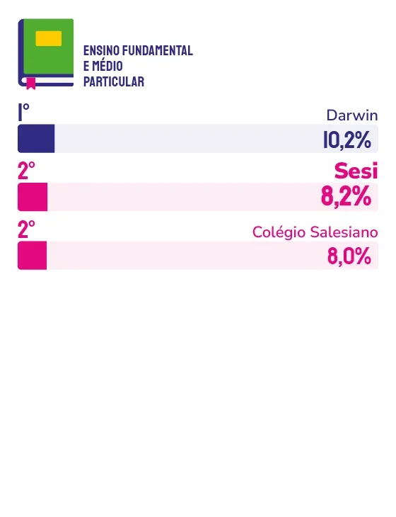

INSTITUIÇÃO DE ENSINO INFANTIL PARTICULAR
ENSINO FUNDAMENTAL E MÉDIO PARTICULAR
Presente na memória espontânea dos capixabas em dois segmentos de ensino, o Sesi ES combina metodologias contemporâneas, robótica, ciência e esporte com uma formação humana que coloca o estudante no centro e que as famílias capixabas não trocam por nada.
Ser lembrado espontaneamente pelos capixabas em educação, um dos segmentos mais concorridos e mais sensíveis para as famílias, exige muito mais do que estrutura física ou nome conhecido. Exige consistência pedagógica, evolução contínua e uma relação de confiança construída ao longo de anos. E o Sesi ES soube construir isso muito bem.
“Esse reconhecimento tem um significado ainda mais especial em um cenário cada vez mais competitivo, com instituições de ensino e complexos educacionais de alto nível atuando na região”, afirma o superintendente do Sesi ES, Geferson Santos. “Manter essa posição de referência ao longo do tempo é resultado do compromisso, da dedicação e do trabalho diário de nossos colaboradores, que são os principais responsáveis por essa conquista.”
O que mantém o Sesi ES relevante para as famílias capixabas não é um atributo isolado, mas sim uma combinação que poucas instituições conseguem sustentar ao mesmo tempo. De um lado, a vanguarda pedagógica: robótica, ciência, matemática, esporte e cultura integrados ao cotidiano escolar, com metodologias que conectam o estudante às demandas do mundo contemporâneo. Do outro, algo que nenhuma tecnologia substitui: a formação humana. “Valorizamos a formação humana, o acolhimento e a parceria com as famílias, que são fundamentais no processo educacional”, explica Santos.
Esse olhar mais amplo sobre o desenvolvimento do estudante, que vai além do conteúdo e investe nas chamadas soft skills, competências comportamentais cada vez mais exigidas no mundo do trabalho e na vida, é o que diferencia o Sesi ES no dia a dia. “Atuamos no desenvolvimento integral das pessoas, ampliando competências comportamentais que são fundamentais para o mundo do trabalho e para a vida em sociedade”, diz o superintendente.
O Espírito Santo que o Sesi ES observa hoje é um estado em crescimento, com demanda crescente por formação qualificada e por instituições que acompanhem o ritmo das transformações. A resposta da instituição vem na forma de investimento contínuo em estruturas, metodologias e recursos, um ciclo de modernização que segue para os próximos anos com o mesmo propósito declarado desde o início: transformar vidas e impulsionar o desenvolvimento do Espírito Santo.
Sobre o que não pode mudar, o superintendente ressalta que a tecnologia vai evoluir, os métodos vão se transformar, as demandas das famílias vão se renovar, mas o compromisso com a qualidade, a inovação e o desenvolvimento integral das pessoas permanece. “A formação humana, o acolhimento e a parceria com as famílias continuarão sendo os pilares que sustentam o Sesi ES.”


Geferson Santos
Superintendente do Sesi ES
“O Sesi ES soube evoluir, acompanhar as transformações da educação e da sociedade e permanecer na vanguarda, sempre investindo em inovação, qualidade e novas soluções para estudantes e famílias. Esse resultado reforça a confiança que a população deposita em nossa instituição e confirma o papel do Sesi ES como uma das principais referências em educação na Grande Vitória.”
88
